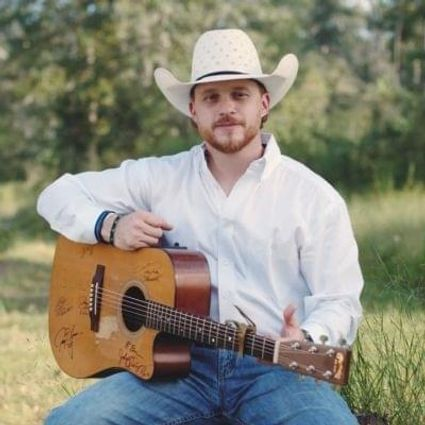

There's a party goin' on round town
Its' one rowdy cowboy showdown
Here in H-town, where we're stronger than a hurricane
From all around, the best of the best
Come here to put their tough to the test
Give it all for gold or go home broke
When they open up that gate
[Chorus]
Welcome to the show, welcome to the home
Of the worlds biggest rodeo
Where the stars light up the night underneath that Texas sky
Welcome to the show, are you ready for a ride
Yeah you better buckle up and hold on tight
Where the Bayou city streets meet the country roads
Welcome to the show
[Verse 2]
It's a Houston tradition
4-H, FFA and Go-Texan
And you can bet son, it's gonna be around a long long time
Where these riders and ropers give it their best
And show them how loud the hometown crowd can get
Cause tonight yall, we at home got a little bit o' cowboy deep inside
See Cody Johnson Live
Get tickets as low as $13
You might also like
Search & Rescue
Drake
MILK OF THE SIREN
Melanie Martinez
LosT
Bring Me The Horizon
[Chorus]
Welcome to the show, welcome to the home
Of the worlds biggest rodeo
Where the stars light up the night underneath that Texas sky
Welcome to the show, are you ready for a ride
Yeah you better buckle up and hold on tight
Where the Bayou city streets meet the country roads
Welcome to the show
Welcome to the show, are you ready for a ride
Yeah you better buckle up and hold on tight
Where the Bayou city streets meet the country roads
Where the Bayou city streets meet these country roads
Welcome to the show
Welcome to the show